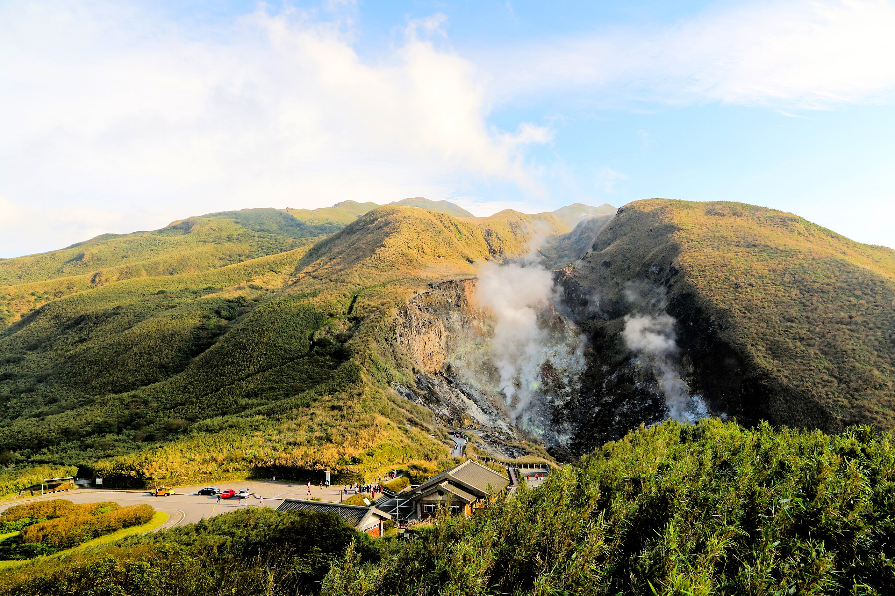

陽明山國家公園
陽明山是台北的後花園，四季皆有不同風貌。春天賞櫻、夏天避暑、秋天賞芒、冬天泡湯。知名的景點包括小油坑、擎天崗大草原與竹子湖海芋田。
交通方式：搭乘捷運至劍潭站，轉乘紅5公車即可抵達。

象山步道 (四獸山)
想要拍攝最美的台北 101 夜景，象山絕對是首選。步道完善，約 20-30 分鐘即可抵達六巨石觀景台。
陽明山是台北的後花園，四季皆有不同風貌。春天賞櫻、夏天避暑、秋天賞芒、冬天泡湯。知名的景點包括小油坑、擎天崗大草原與竹子湖海芋田。
交通方式：搭乘捷運至劍潭站，轉乘紅5公車即可抵達。

想要拍攝最美的台北 101 夜景，象山絕對是首選。步道完善，約 20-30 分鐘即可抵達六巨石觀景台。